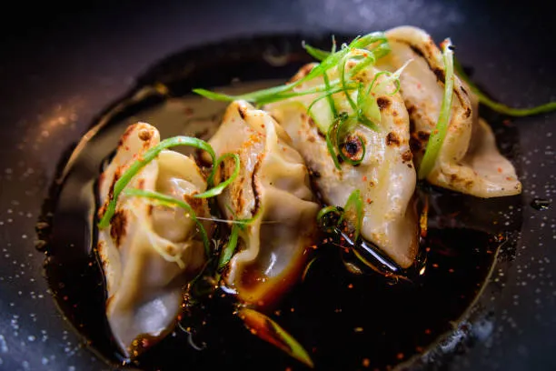

Back to Home
Home
Gyoza Recipes

Description
Discover the art of crafting delicious, crispy golden gyoza with our
easy-to-follow recipe. Whether you're a seasoned cook or a beginner,
this step-by-step guide will walk you through creating flavorful
gyoza filled with a perfect blend of savory ingredients, from tender
ground meat to aromatic vegetables. With tips for mastering the
perfect folding technique and achieving that irresistible crispy
bottom, you'll be able to enjoy homemade gyoza that's just as good
as your favorite restaurant's. Ready to impress your taste buds?
Let’s get cooking!
ingredients
This 1x recipe (10 servings)
- 1 tablespoon sesame oil
- 2 cups chopped cabbage
- ¼ cup chopped onion
- ¼ cup chopped carrot
- 1 clove garlic, chopped
- ½ pound ground pork
- 1 large egg
- 1 (10 ounce) package wonton wrappers
- 1 tablespoon vegetable oil
- ¼ cup water
- ¼ cup soy sauce
- 2 tablespoons rice vinegar
Directions
- Heat sesame oil in a large skillet over medium-high heat. Add
cabbage, onion, carrot, and garlic; cook and stir until cabbage
is limp, 3 to 4 minutes. Add ground pork and egg; cook and stir
until pork is browned and crumbly, 5 to 7 minutes.
- Make the gyoza: Place about 1 tablespoon pork mixture into the
center of a wonton wrapper. Fold wrapper in half over filling,
then seal the edges with moistened fingers. Repeat to make
remaining gyoza.
- Heat vegetable oil in a large skillet over medium-high heat.
Cook gyoza in the hot skillet until lightly browned, about 1
minute per side. Add water to the skillet, reduce the heat,
cover, and steam gyoza until water is gone. Remove from the
heat.
- Mix soy sauce and rice vinegar together in a small bowl. Serve
as a dipping sauce with gyoza.
Thank you for visiting—now it's time to roll up your sleeves
and enjoy making your very own delicious gyoza at home!